Observations
8 834
15 colonnes brutes → 12 features finales
Meilleur F1-score
90.67%
ResNet-1D + SMOTE
Déséquilibre max
1172:1
Classe 0 vs Classe 3
Figures générées
10
EDA + Entraînement + Résultats
Paramètres AlexNet
487K
5 blocs Conv1D + 2 FC
Paramètres ResNet
597K
5 blocs résiduels
Distribution des classes (déséquilibre critique)
Classe 0 🌿
8 208 (92.9%)
Classe 2 🌋
619 (7.0%)
Classe 3 🔥
7 (0.08%)
Pipeline du projet
📂 Données MODIS
8834 × 15
8834 × 15
→
📊 EDA
6 figures
6 figures
→
⚙️ Prétraitement
12 features
12 features
→
⚖️ SMOTE
class_weight
class_weight
→
🧠 CNN 1D
Reshape (n,12,1)
Reshape (n,12,1)
→
✅ Évaluation
F1 · RMSE · CM
F1 · RMSE · CM
Distribution de la variable cible
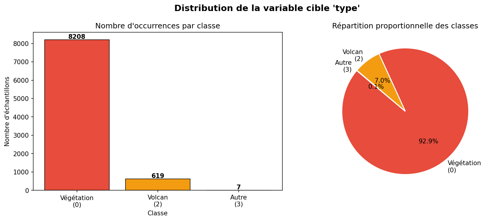
Figure 1 — Distribution de la variable cible 'type' : déséquilibre extrême (92.9% / 7.0% / 0.08%)
Distributions des features numériques
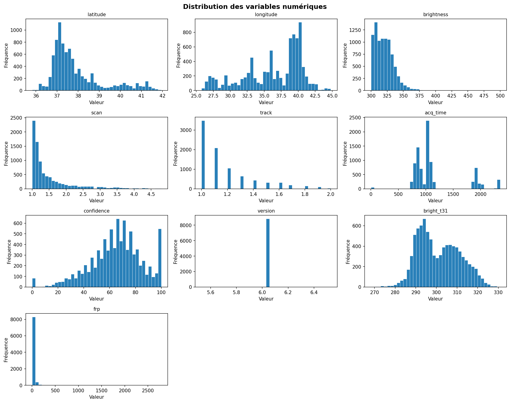
Figure 2 — Histogrammes des variables numériques (brightness quasi-normal, frp fortement asymétrique)
Matrice de corrélation
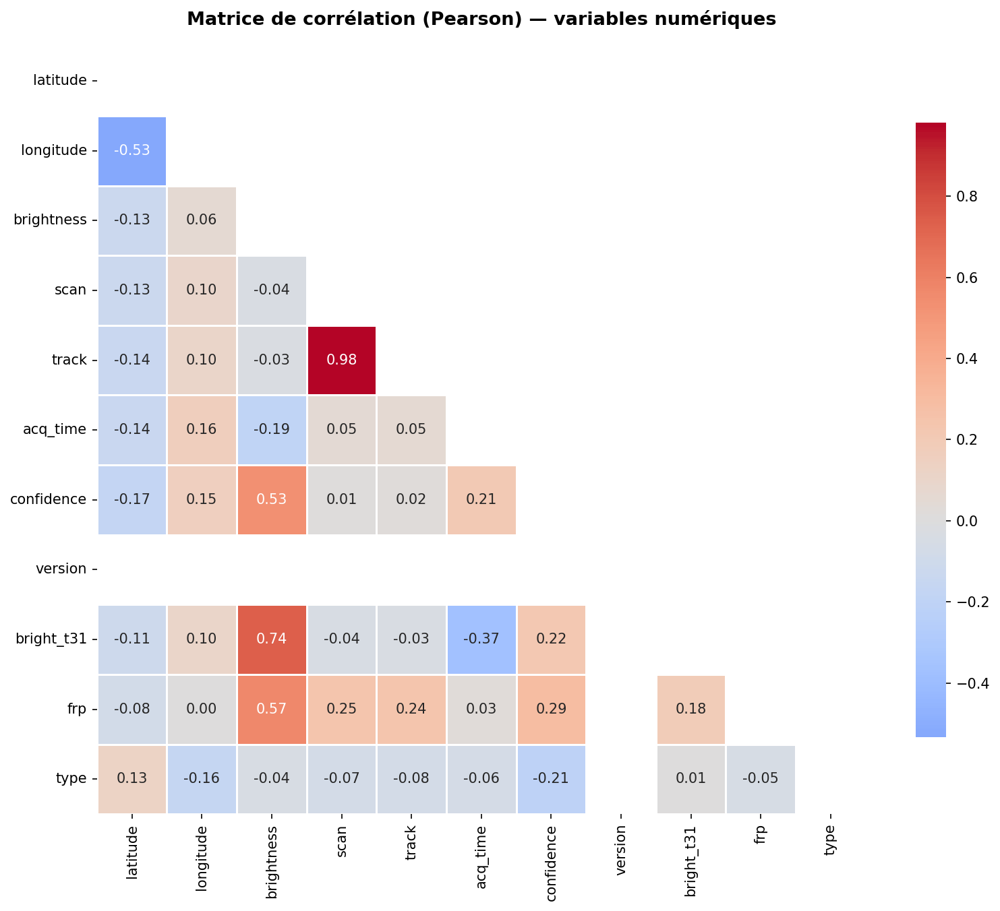
Figure 3 — Corrélation de Pearson : brightness↔bright_t31 élevée, frp meilleur prédicteur de type
Boxplots par classe & Répartition temporelle
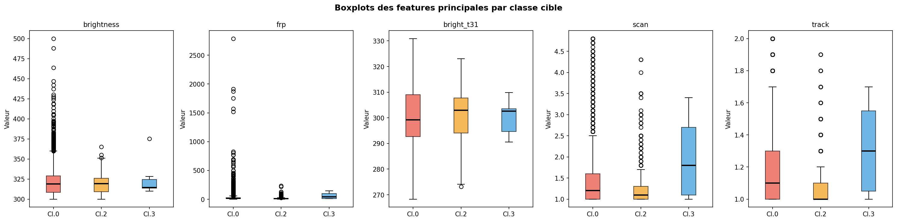
Figure 4 — Pouvoir discriminant des features principales par classe
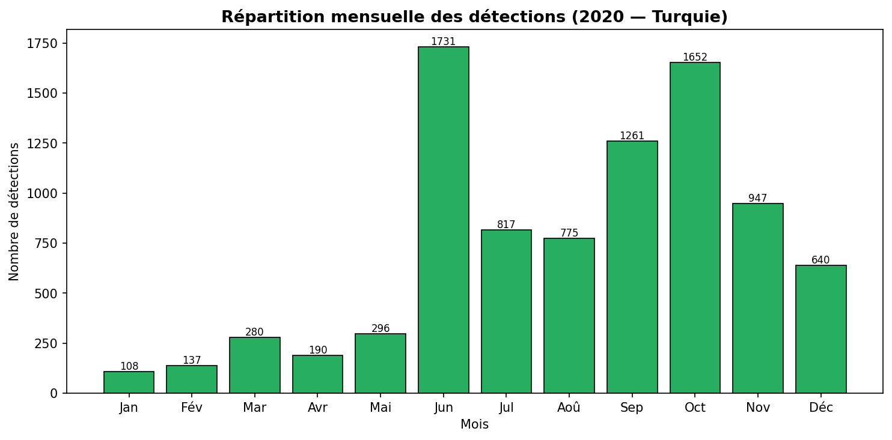
Figure 5 — Saisonnalité : pic juillet–septembre 2020 (saison sèche)
Répartition géographique
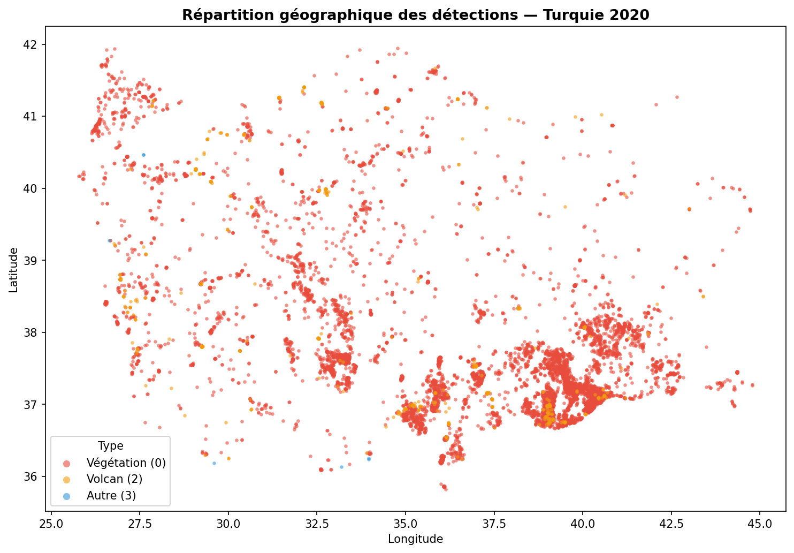
Figure 6 — Localisation GPS des détections — côte méditerranéenne et égéenne (Turquie 2020)
Effet de SMOTE sur les classes
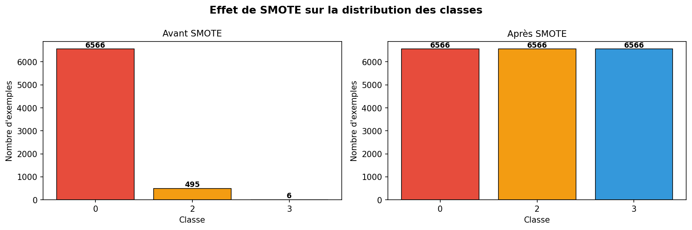
Figure 7 — Distribution avant/après SMOTE : 7 067 → 19 698 exemples (3 classes à 6 566 chacune)
Résumé des étapes de prétraitement
| Étape | Action | Résultat |
|---|---|---|
| 1. Nettoyage | Suppression instrument, version (constantes) | 15 → 13 colonnes |
| 2. Encodage | satellite : A→0 / B→1 · daynight : D→0 / N→1 | 2 nouvelles features numériques |
| 3. Feature eng. | acq_date → mois (1–12) · acq_time → heure (0–23) | +2 features temporelles |
| 4. Split stratifié | 80% train / 20% test (stratify=y) | 7 067 / 1 767 exemples |
| 5A. class_weight | w₀=0.36 · w₂=4.76 · w₃=392.6 | Poids dans model.fit() |
| 5B. SMOTE | k_neighbors=2 · toutes classes → 6 566 | 7 067 → 19 698 exemples |
| 6. Normalisation | StandardScaler z-score (fit sur train uniquement) | 12 features normalisées |
Poids de classes calculés (AlexNet-1D)
Classe 0 — Végétation
0.36
Peu pénalisée (majoritaire)
Classe 2 — Volcan
4.76
13× plus pénalisée
Classe 3 — Autre
392.6
1 094× plus pénalisée
Reshape : données tabulaires → 1D-CNN
X.shape avant : (n, 12) → X.reshape(n, 12, 1) → X.shape après : (n, 12, 1)
Conv1D attend (batch_size, steps, channels) :
steps = 12 # nombre de features
channels = 1 # chaque feature est un scalaire
# Ordre sémantique des features dans la séquence :
[0] latitude [1] longitude [2] brightness [3] scan [4] track
[5] satellite [6] confidence [7] bright_t31 [8] frp
[9] daynight [10] mois [11] heure
Conv1D attend (batch_size, steps, channels) :
steps = 12 # nombre de features
channels = 1 # chaque feature est un scalaire
# Ordre sémantique des features dans la séquence :
[0] latitude [1] longitude [2] brightness [3] scan [4] track
[5] satellite [6] confidence [7] bright_t31 [8] frp
[9] daynight [10] mois [11] heure
🏛️ AlexNet-1D 487 619 paramètres
Input(12, 1)
Conv1D(64,k=3) + BN + ReLU(12, 64)
Conv1D(128,k=3) + BN + MaxPool(6, 128)
Conv1D(256,k=3) + BN + ReLU(6, 256)
Conv1D(256,k=3) + BN + ReLU(6, 256)
Conv1D(128,k=3) + BN + MaxPool(3, 128)
GlobalAvgPool1D(128,)
Dense(256) + Dropout(0.5)(256,)
Dense(128) + Dropout(0.3)(128,)
Dense(3, softmax)(3,)
Stratégie : class_weight · Régularisation : L2(1e-4) + Dropout
🔗 ResNet-1D 597 443 paramètres
Input(12, 1)
Conv1D(64,k=3) + BN + ReLU(12, 64)
ResBlock(64) × 2(12, 64)
ResBlock(128) × 2 + proj(12, 128)
ResBlock(256) × 1 + proj(12, 256)
GlobalAvgPool1D(256,)
Dense(128) + Dropout(0.3)(128,)
Dense(3, softmax)(3,)
Bloc résiduel : H(x) = F(x) + x
Stratégie : SMOTE · Régularisation : L2(1e-4) + Skip connections
Courbes d'entraînement
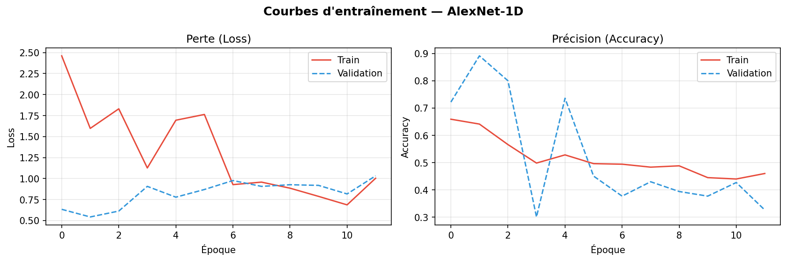
Figure 8a — AlexNet-1D : convergence rapide (meilleure époque = 2), EarlyStopping à l'époque 12
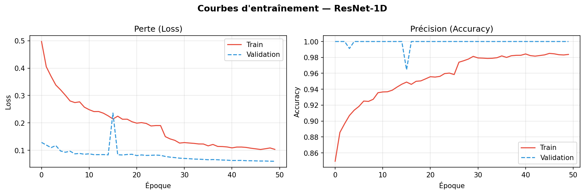
Figure 8b — ResNet-1D : 50 époques complètes, val_accuracy finale = 100%, val_loss = 0.0602
Matrices de confusion
Figure 9a — AlexNet-1D (brute + normalisée) · Classe 2 recall = 31%
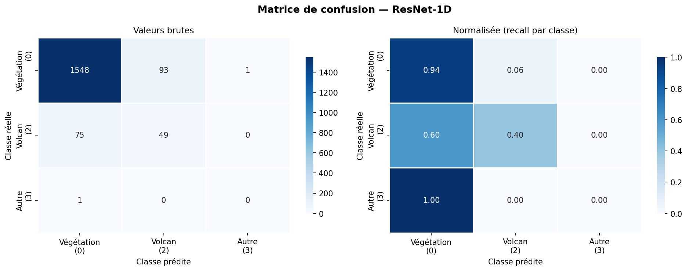
Figure 9b — ResNet-1D (brute + normalisée) · Classe 2 recall = 40%
Rapport de classification par classe
AlexNet-1D (class_weight)
| Classe | Précision | Rappel | F1 | Support |
|---|---|---|---|---|
| 0 — Végétation | 0.95 | 0.95 | 0.95 | 1 642 |
| 2 — Volcan | 0.30 | 0.31 | 0.31 | 124 |
| 3 — Autre | 0.00 | 0.00 | 0.00 | 1 |
| Weighted avg | 0.90 | 0.90 | 0.90 | 1 767 |
ResNet-1D (SMOTE)
| Classe | Précision | Rappel | F1 | Support |
|---|---|---|---|---|
| 0 — Végétation | 0.95 | 0.94 | 0.95 | 1 642 |
| 2 — Volcan | 0.35 | 0.40 | 0.37 | 124 |
| 3 — Autre | 0.00 | 0.00 | 0.00 | 1 |
| Weighted avg | 0.91 | 0.90 | 0.91 | 1 767 |
🏆 Meilleur modèle
ResNet-1D
+0.57% F1 · −0.0085 RMSE
Meilleure convergence
AlexNet
Époque 2 (EarlyStopping ep.12)
Meilleur recall volcans
40%
ResNet-1D (+29% vs AlexNet)
Tableau comparatif global
| Modèle | Stratégie | Accuracy | Precision | Recall | F1-score | RMSE | Époques |
|---|---|---|---|---|---|---|---|
| AlexNet-1D | class_weight | 90.04% | 90.17% | 90.04% | 90.10% | 0.6334 | 12 (best=2) |
| ResNet-1D | SMOTE | 90.38% | 91.00% | 90.38% | 90.67% | 0.6249 | 50 |
Comparaison visuelle des métriques
AlexNet-1D
ResNet-1D
Figure comparative finale
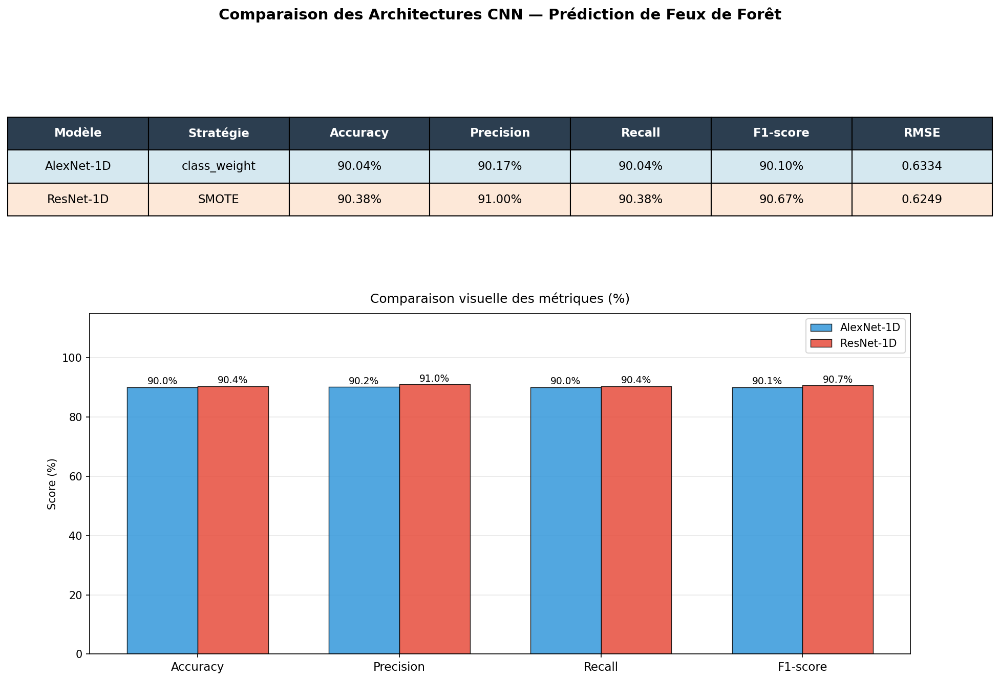
Figure 10 — Tableau et barres comparatives : ResNet-1D domine sur toutes les métriques